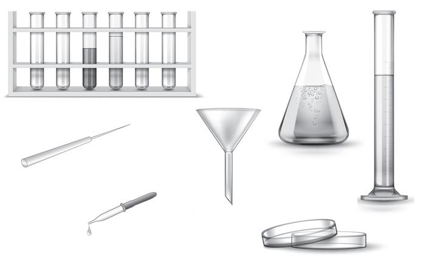

Заполните данные, чтобы приступить к заданиям.
Тема: Биология — система наук о живой природе
Соедини науку и то, что она изучает.
изучает строение и жизнедеятельность организмов, их многообразие, сообщества, связи с окружающей средой.
Людей, профессионально занимающихся научной деятельностью, называют научными работниками или .
Способом изучения и познания окружающего мира человеком является .
Какая наука изучает индивидуальное развитие организмов?
Перенеси на место пропусков верные названия профессий.
— специалист, который занимается разведением и содержанием сельскохозяйственных животных, профилактикой и лечением их заболеваний.
— специалист в области земледелия.
Из перечисленных наук выбери науку, наиболее связанную с биологией:

Какую лабораторную посуду, изображённую на рисунке, можно использовать для измерения объёма?
Выбери правильные правила поведения в лаборатории.
Выбери верные факты о лабораторной посуде и оборудовании.
Биология — наука, которая изучает ж во всех её проявлениях.
Живые организмы на нашей планете обитают на с , в в , в п , область распространения жизни в этих средах составляет оболочку Земли — б .